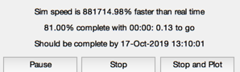
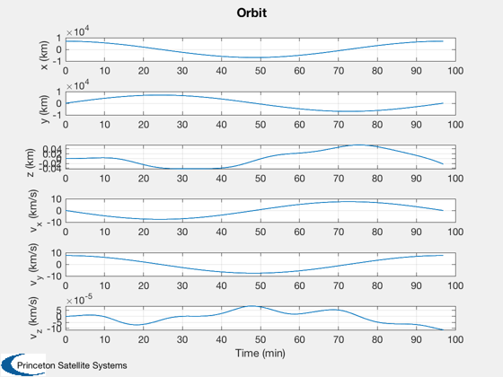

Simulates a spacecraft in earth orbit with spherical harmonics.
The gravity model is the GEM-T1 model which is 36 by 36 (zonal and tesseral harmonics) All control is done through the vector aExt.
Since version 8. ------------------------------------------------------------------------- See also FOrbCartH, Constant, Plot2D, TimeGUI, TimeLabl, RK4, Date2JD, LoadGEM, El2RV, Period -------------------------------------------------------------------------
Contents
%------------------------------------------------------------------------------- % Copyright (c) 2009 Princeton Satellite Systems, Inc. All rights reserved. %-------------------------------------------------------------------------------
Global for the time GUI
%------------------------ global simulationAction simulationAction = ' ';
Constants
%---------- mu = Constant('mu'); % Orbital elements % [semi-major axis, inclination, argument of perigee, ascending node,
eccentricity, mean anomaly]
%---------------------------------------------------------------------
el = [7000 0 0 0 0 0];
[r, v] = El2RV( el, mu );
The 6 element state vector
%--------------------------- x = [r;v]; nSim = 500; period = Period( el(1) ); dTSim = period/nSim; xPlot = zeros(6,nSim); aExt = [0;0;0]; % All the control accelerations would go here t = 0;
Set up the gravity model
%-------------------------
nN = 36;
nM = 36;
This is the GEM T1 model
%-------------------------
gravityModel = LoadGEM( 1 );
Initial time
%-------------
jD0 = Date2JD([2009 1 13 0 0 0]);
Initialize the time display
%---------------------------- tToGoMem.lastJD = 0; tToGoMem.lastStepsDone = 0; tToGoMem.kAve = 0; ratioRealTime = 0; [ ratioRealTime, tToGoMem ] = TimeGUI( nSim, 0, tToGoMem, 0, dTSim, 'TOrbit Sim' ); for k = 1:nSim % Update the plot vector %----------------------- xPlot(:,k) = x; % Display the status message %--------------------------- [ ratioRealTime, tToGoMem ] = TimeGUI( nSim, k, tToGoMem, ratioRealTime, dTSim ); x = RK4( 'FOrbCartH', x, dTSim, t, aExt, gravityModel, nN, nM, jD0 + t/86400 ); t = t + dTSim; % Time control %------------- switch simulationAction case 'pause' pause simulationAction = ' '; case 'stop' return; case 'plot' break; end end xPlot = xPlot(:,1:k); [t, tL] = TimeLabl( (0:(k-1))*dTSim ); % Assumes input is seconds Plot2D( t, xPlot, tL, {'x (km)' 'y (km)' 'z (km)' 'v_x (km/s)' 'v_y (km/s)' 'v_z (km/s)'}, 'Orbit' ); %-------------------------------------- % PSS internal file version information %-------------------------------------- 